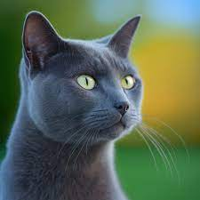

GATO AZUL RUSO

La constitución del gato azul ruso es grácil. Es un gato mediano, de patas largas,
que puede pesar entre tres y cinco kilos. La raza se diferencia enormemente del british
shorthair, que tiene una constitución más rechoncha. En cambio, el cartujo se le parece
más, si no fuera por los ojos. El cartujo los tiene amarillos y el gato azul ruso,
de color verde esmeralda intenso.